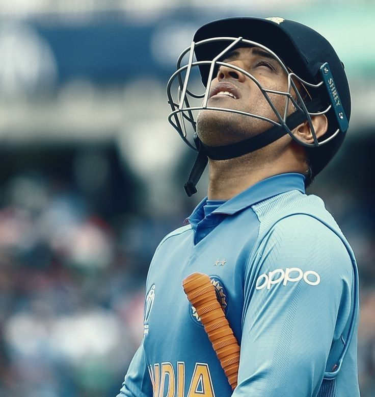

The Captain Cool
Mahendra Singh Dhoni, fondly known as "Captain Cool," is one of the most celebrated cricketers in the world. Born on July 7, 1981, in Ranchi, India, Dhoni led the Indian cricket team to remarkable victories, including the ICC T20 World Cup (2007), ICC Cricket World Cup (2011), and ICC Champions Trophy (2013). Known for his calm demeanor and sharp cricketing mind, he has left an indelible mark on the game of cricket.